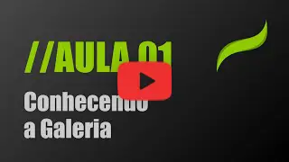
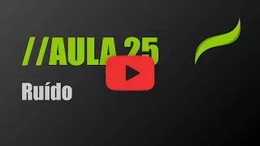

Aprenda tudo o que você precisa saber sobre o Procreate com aulas práticas e super didáticas.
🎥 8,5 horas de vídeo sob demanda, 📦 24 recursos para download, 📱 Acesso mobile e desktop e 🏅 Certificado de conclusão.Sobre o Curso
Bem-vindo ao Fundamentos do Procreate!
Matricule-se no melhor curso que já criei e descubra como o Procreate pode se tornar sua ferramenta de escolha daqui para frente. Sou designer há mais de 20 anos e trabalhei em diversas agências e editoras, onde utilizei diariamente inúmeros softwares de desenho, pintura e animação na produção de peças para centenas de clientes. Nos últimos 5 anos, porém, dediquei-me ao uso exclusivo do Procreate em todos os meus projetos, garantindo uma experiência única e abrangente, a qual estou compartilhando com você neste curso.
Não se trata apenas de vídeos soltos e quizzes com nomes de funcionalidades para decorar, mas sim de uma explicação minuciosa de todas as funcionalidades do Procreate, com uma linguagem didática e natural para que todos possam absorver o máximo possível, independentemente do nível de conhecimento, sem ficarem presos em terminologias complexas e exclusivas de uma área ou profissão específica.
O curso se chama Fundamentos do Procreate por um motivo claro: não abordo apenas o básico, mas sim os detalhes gerais de todas as funcionalidades, começando com uma explicação sobre a interface, passando pelo funcionamento da ferramenta e, por fim, sua utilização. Sempre, é claro, com muitas dicas e sugestões de atalhos durante as aulas, para que você possa otimizar ao máximo seu fluxo de aprendizado e de criação de suas artes.
Começaremos o curso com os vídeos introdutórios, nos quais mostrarei as interfaces gerais do Procreate, para que você possa se localizar e sempre ter um ponto de referência para voltar, caso precise encontrar alguma funcionalidade. E à medida que o curso avança, a quantidade de informações e detalhes aumentará, até que você tenha um entendimento completo de todos os fundamentos do Procreate.
Na sequência, partiremos para as ferramentas de desenho e pintura, aliadas à biblioteca de pincéis e todas as suas configurações. E arrisco dizer que este curso tem uma das coberturas mais abrangentes sobre a biblioteca de pincéis do Procreate, pois, além de passarmos por cada configuração existente, ainda temos 3 aulas práticas nas quais você criará seus próprios pincéis, para fixar os conceitos ensinados. E lembre-se, uma das funcionalidades que destacou o Procreate no mercado de desenho e pintura foi o motor de pincéis, que se mostrou muito superior a todos os concorrentes.
Veremos também, em detalhes, a estrutura de camadas e seus modos de mesclagem, exploraremos funcionalidades mais avançadas como a harmonização de cores, criação de paletas, uso de máscaras, curvas e liquefazer. E, é claro, todas as outras funcionalidades existentes nas áreas de ações do Procreate, incluindo os assistentes de desenho e animação, os quais também terão aulas práticas nas quais você criará a primeira página para seu livro de colorir e também sua primeira animação.
Não perca esta oportunidade, matricule-se agora mesmo e veja como o Procreate se tornará sua ferramenta favorita do dia a dia. Lembre-se que você tem 7 dias de garantia, então tem tudo a ganhar e nada à perder. Fique à vontade para conferir as aulas gratuitas para sentir o tom do curso, verificar as avaliações dos outros alunos ou até mesmo me encontrar nas redes sociais, para que você tenha total confiança em mim como instrutor.
O que você aprenderá neste curso
- Domínio Completo do Procreate: Desde os conceitos básicos até as funcionalidades avançadas.
- Teoria das Cores: Entenda os princípios por trás das ferramentas de seleção de cores para aprimorar sua habilidade de escolher paletas.
- Exercícios Práticos: Aplique seus conhecimentos com aulas práticas cuidadosamente elaboradas.
- Mecanismo de Pincéis: Domine o uso e a criação de pincéis personalizados para expressar sua criatividade.
- Tópicos Avançados: Explore recursos avançados, como modos de mesclagem de camadas e máscaras de camada para elevar suas criações a outro nível.
- Seleções e Simetria: Aprenda técnicas avançadas de seleção e como utilizar a simetria para criar obras equilibradas.
- Ajustes Avançados: Conheça todos os ajustes disponíveis no Procreate para personalizar suas obras com precisão.
- Animação e Exportação: Descubra como criar animações, importar arquivos PDF e exportar timelapses para compartilhar seu processo criativo.
- Abordagem Completa: Aprenda não apenas como, mas quando e por que usar cada recurso do Procreate para obter resultados profissionais e expressivos.
Currículo completo do curso
- Aula 01 - Visão geral da galeria de arquivos
- Aula 02 - Visão geral da área de trabalho
- Aula 03 - Configurações da área de trabalho
- Aula 04 - Pincéis - Biblioteca de Pincéis
- Aula 05 - Pincéis - Usando os Pincéis
- Aula 06 - Pincéis - Entendendo as Configurações dos Pincéis
- Aula 07 - Pincéis - Aprofundando nas Configurações dos Pincéis
- Aula Prática - Criando um Pincel de Carimbo
- Aula Prática - Criando um Pincel de Trepadeira
- Aula Prática - Criando um Pincel com Textura
- Aula 08 - Camadas no Procreate - Parte 01
- Aula 09 - Camadas no Procreate - Parte 02
- Aula 10 - Camadas - Estilos de Camadas
- Aula 11 - Camadas e seus Gestos
- Aula 12 - Cores - Visão Geral
- Aula 13 - Cores - Utilizando as Cores
- Aula 14 - Cores - Modos de Visualização
- Aula 15 - Cores - Harmonia de Cores
- Aula 16 - Cores - Paleta de Cores
- Aula 17 - Ferramentas - Seleção
- Aula 18 - Ferramentas - Transformar
- Aula 19 - Ferramentas - Interpolação em Transformar
- Aula 20 - Ajustes - Matiz, Saturação e Brilho
- Aula 21 - Ajustes - Equilíbrio de Cores
- Aula 22 - Ajustes - Curvas
- Aula 23 - Ajustes - Mapa do Gradiente
- Aula 24 - Ajustes - Desfoques
- Aula 25 - Ajustes - Ruído
- Aula 26 - Ajustes - Nitidez
- Aula 27 - Ajustes - Efeitos
- Aula 28 - Ajustes - Liquefazer
- Aula 29 - Ajustes - Clonar
- Aula 30 - Ações - Adicionar
- Aula 31 - Ações - Tela
- Aula 32 - Ações - Compartilhar
- Aula 33 - Ações - Vídeo / Time-lapse
- Aula 34 - Ações - Ajustes
- Aula 35 - Assistência de Página
- Aula 36 - Guia de Desenho
- Aula 37 - Assistência de Animação
- Aula 38 - Exportar Animações
- Aula Prática - Criando um Livro de Colorir
- Aula Prática - Criando uma Animação
- Aula 39 - Assistência com Gestos de um Toque
Pré-Requisitos
Você não precisa ter experiência prévia para participar deste curso. O único requisito é ter um iPad com o Procreate instalado. A caneta é um bônus que pode proporcionar uma experiência ainda melhor no curso, mas não é obrigatória
Aulas gratuitas para degustação
- 
- 
Pré-Requisitos
Você não precisa ter experiência prévia para participar deste curso. O único requisito é ter um iPad com o Procreate instalado. A caneta é um bônus que pode proporcionar uma experiência ainda melhor no curso, mas não é obrigatória
Sobre o criador
-
Olá, sou Kaio, um apaixonado por design com mais de 20 anos de experiência na indústria criativa. Ao longo da minha carreira, explorei diversas áreas, desde design editorial até ilustrações para a web3, criação de aplicativos e projetos de inovação no mundo físico e digital. Minha jornada profissional me proporcionou uma visão abrangente e profunda do mundo do design e da criatividade.
Atualmente, concentro minha paixão na ilustração e em ajudar outras pessoas a desenvolverem sua criatividade e habilidades em softwares de desenho e pintura. Acredito que todos têm um artista dentro de si, esperando para ser expresso, e as ferramentas não podem ser uma barreira para isso.
Meus cursos são projetados para serem práticos, envolventes e repletos de dicas e truques que acumulei ao longo dos anos. Estou ansioso para compartilhar meu conhecimento e te ajudar a desbloquear seu potencial criativo.